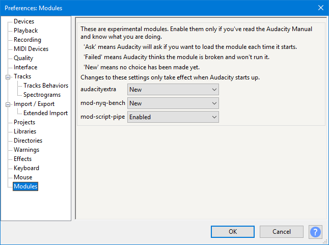
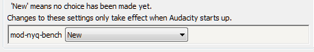

Modules Preferences
- Accessed by: (on a Mac )
- 
- Modules Preferences.
- Click on any other Preferences sections in the above image to read about those Preferences.
Modules
No modules are yet shipped with Audacity.
Nyquist Workbench provides the ability to create and run arbitrary Nyquist code in Audacity from a graphical editor. The Workbench can be compiled from our source code. Nyquist Workbench is recommended (though not essential) for anyone interested in writing Nyquist plug-ins for Audacity - good functionality to test Nyquist plug-ins is also available in Nyquist Prompt.
{kind=link}
Current Workbench features include:
- Full support for Generate, Process and Analyze effects
- Auto load last file
- Built-in output/debug screen
- Parentheses matching.
Mod-script pipe can only be compiled from our source code. This is a GUI plug-in that allows Audacity to be driven from an external Perl script, or using any other scripting language that supports named pipes. Please be aware of the security implications of allowing other applications or processes to control Audacity. For more information, see Scripting.
Mod-track-panel: This is the start of an experiment that will ultimately provide a more flexible panel for the audio, label, MIDI and note tracks. It is currently only of value to developers and must be compiled from the latest Audacity source code.
Loading modules into Audacity
To use an experimental module such as Nyquist Workbench:
- Add a "modules" folder to the Audacity installation folder
- Add the file such as mod-nyq-bench.dll (Windows) or mod-nyq-bench.so (Mac) to the Modules folder, restart Audacity and open Modules Preferences
- You should see that file is marked as "New":
 - Click the dropdown menu for the item, change it to "Enabled", press then restart Audacity.
When you restart Audacity, you should now see an additional "Nyquist Workbench" entry at the bottom of View Menu (or whatever feature the module enables).
| If you compile a module yourself on some other day than when you compiled Audacity, you will see a "Module Unsuitable" error after enabling the module and restarting Audacity. The only exception to this is if you build a final Audacity release. If you see the "Module Unsuitable" error you will need to rebuild Audacity and the module, launch Audacity, change the entry for the module from "Failed" to "Enabled", then restart Audacity. |